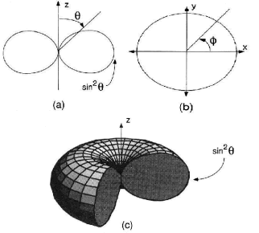
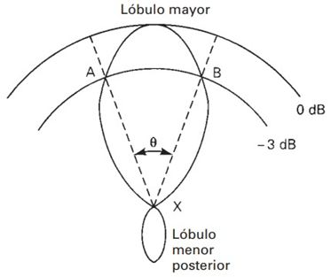
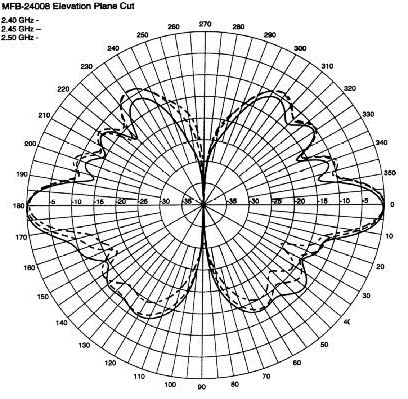
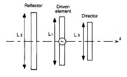
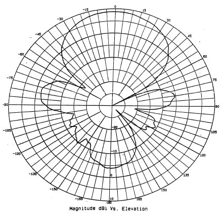
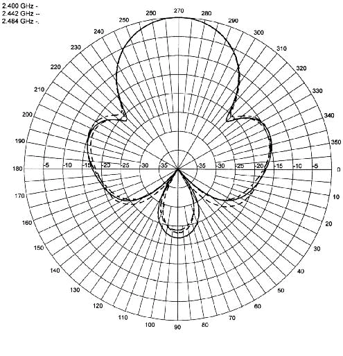
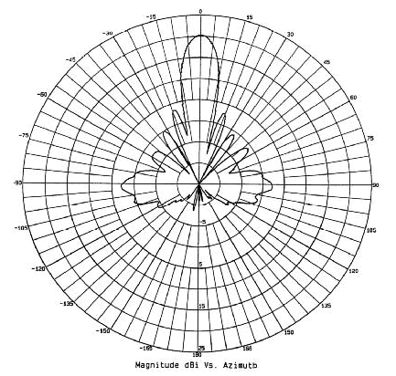

Antena Parabólica
Una antena es un dispositivo hecho para transmitir (radiar) y recibir ondas de radio
(electromagnéticas). Existen varias características importantes de una antena que deben de ser consideradas
al momento de elegir una específica para su aplicación:
Patrón de radiación
Ganancia
Directividad
Polarización
Patrones de Radiación:
El patrón de radiación de una antena se puede representar como una grafica tridimensional de la energía radiada vista desde fuera de esta. Los patrones de radiación usualmente se representan de dos formas, el patrón de elevación y el patrón de azimuth. El patrón de elevación es una gráfica de la energía radiada por la antena vista de perfil. El patrón de azimuth es una gráfica de la energía radiada vista directamente desde arriba. Al combinar ambas gráficas se tiene una representación tridimensional de como es realmente radiada la energía desde la antena.

a)Patrón de elevación
de un dipolo genérico.
b)Patrón de azimut de un dipolo genérico.
c)Patrón de radiación 3D
b)Patrón de azimut de un dipolo genérico.
c)Patrón de radiación 3D
Ganancia
La ganancia de una antena es la relación entre la potencia que entra en una antena y la potencia que sale de esta. Esta ganancia es comúnmente referida en dBi's, y se refiere a la comparación de cuanta energía sale de la antena en cuestión, c omparada con la que saldría de una antena isotrópica. Una antena isotrópica es aquella que cuenta con un patrón de radiación esférico perfecto y una ganancia lineal unitaria.
Directividad
La directividad de la antena es una medida de la concentración de la potencia radiada en una dirección particular. Se puede entender también como la habilidad de la antena para direccionar la energía radiada en una dirección especifica. Es usualmente una relación de intensidad de radiación en una dirección particular en comparación a la intensidad promedio isotrópica.
Polarización
Es la orientación de las ondas electromagnéticas al salir de la antena. Hay dos tipos básicos de polarización que aplican a las antenas, como son: Lineal (incluye vertical, horizontal y oblicua) y circular (que incluye circular derecha, circular izquierda, elíptica derecha, y elíptica izquierda). No olvide que tomar en cuenta la polaridad de la antena es muy importante si se quiere obtener el máximo rendimiento de esta. La antena transmisora debe de tener la misma polaridad de la antena receptora para máximo rendimiento.
Ancho de haz
Es el margen angular de direcciones en las que el diagrama de radiación de un haz toma un valor de 3dB por debajo del máximo. Es decir, la dirección en la que la potencia radiada se reduce a la mitad.

Ancho de haz definido por la
separación angular entre dos puntos de media potencia definidos por un angulo.
Tipos de antenas
Antenas Dipolo
Todas las antenas de dipolo tienen un patrón de radiación generalizado. Primero el patrón de elevación muestra que una antena de dipolo es mejor utilizada para transmitir y recibir desde el lado amplio de la antena. Es sensible a cualquier movimiento fuera de la posición perfectamente vertical. Se puede mover alrededor de 45 grados de la verticalidad antes que el desempeño de la antena se degrade más de la mitad. Otras antenas de dipolo pueden tener diferentes cantidades de variación vertical antes que sea notable la degradación.Un ejemplo de patrón de elevación puede verse a continuación. A partir del patrón de azimuth se ve que las antenas operan igualmente bien en 360 grados alrededor de la antena. Físicamente las antenas dipolo son cilíndricas por naturaleza, y pueden ser ahusadas o con formas especificas en el exterior para cumplir con especificaciones de medidas. Estas antenas son usualmente alimentadas a través de una entrada en la parte inferior, pero también pueden tener el conector en el centro de la misma.
Antenas Dipolo Multi-Elemento
Las antenas multi-elemento tipo dipolo cuentan con algunas de las características generales del dipolo simple. Cuentan con un patrón de elevación y azimuth similar al de la antena dipolo simple. La diferencia más clara entre ambas es la direccionalidad de la antena en el plano de elevación, y el incremento en ganancia debido a la utilización de múltiples elementos. Con el uso de múltiples elementos en la construcción de la antena, esta puede ser configurada para diferentes ganancias, lo cual permite diseños con características físicas similares. Tal como se puede ver en el patrón de elevación de la fig. 2, múltiples antenas de dipolo son muy direccionales en el plano vertical. Debido a que la antena de dipolo radía igualmente bien en todas las direcciones del plano horizontal, es capaz de operar igualmente bien en configuración horizontal.

Patrón de Elevación de una antena multi-dipolo
Antenas Yagi
Estas se componen de un arreglo de elementos independientes de antena, donde solo uno de ellos transmite las ondas de radio. El número de elementos (específicamente, el número de elementos directores) determina la ganancia y directividad. Las antenas Yagi no son tan direccionales como las antenas parabólicas, pero son más directivas que las antenas panel.

Construcción de una antena yagi

Patrón de Elevación de una antena yagi
Antenas Panel Plano (Flat Panel)
Las antenas de panel plano como su nombre lo dice son un panel con forma cuadrada o rectangular. y están configuradas en un formato tipo patch. Las antenas tipo Flat Panel son muy direccionales ya que la mayoría de su potencia radiada es una sola dirección ya sea en el plano horizontal o vertical. En el patrón de elevación (Fig. 4) y en el patrón de azimuth (Fig. 5) se puede ver la directividad de la antena Flat Panel. Las antenas Flat Panel pueden ser fabricadas en diferentes valores de ganancia de acuerdo a su construcción. Esto puede proveer excelente directividad y considerable ganancia.

Patrón de Azimuth de una antena Flat Panel
Antenas Parabólicas
Las antenas parabólicas usan características físicas así como antenas de elementos múltiples para alcanzar muy alta ganancia y direccionalidad. Estas antenas usan un plato reflector con la forma de una parábola para enfocar las ondas de radio recibidas por la antena a un punto focal. La parábola también funciona para capturar la energía radiada por la antena y enfocarla en un haz estrecho al transmitir. Como puede verse en la Figura 5, la antena parabólica es muy direccional. Al concentrar toda la potencia que llega a la antena y enfocarla en una sola dirección, este tipo de antena es capaz de proveer muy alta ganancia.

Patrón de Azimuth de una antena Parabólica